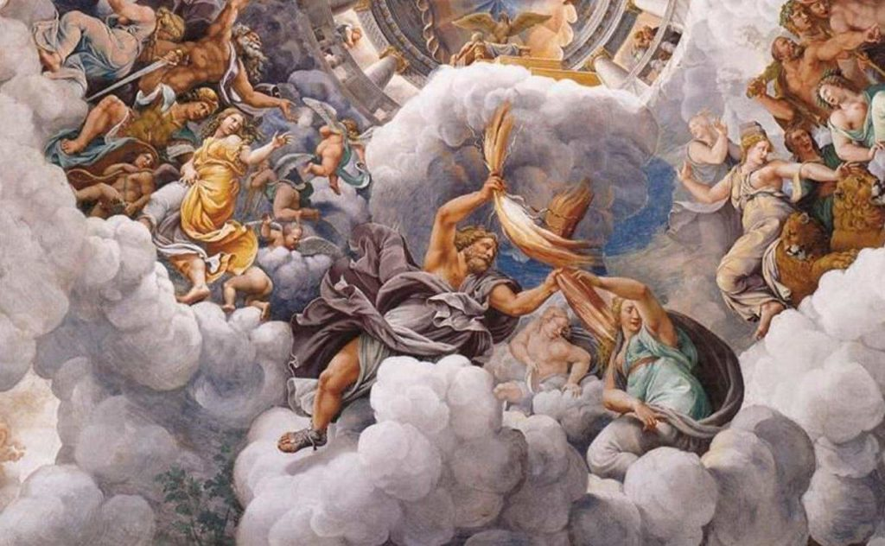
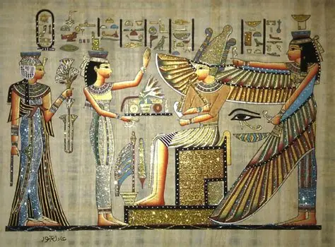
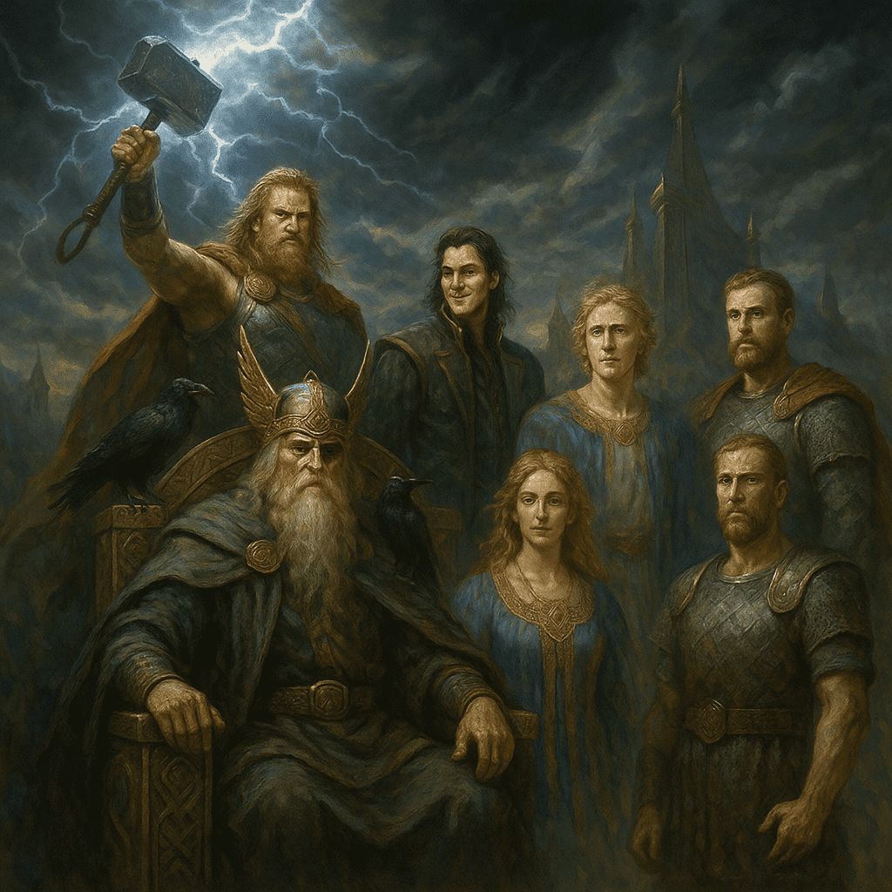

O que são mitologias?
A mitologia funciona como uma ponte fascinante entre a imaginação humana e o desejo de compreender o inexplicável. Por meio de narrativas ricas em simbolismo, povos antigos criaram deuses, heróis e criaturas fantásticas para justificar fenômenos naturais, a origem do mundo e os dilemas éticos da existência. Longe de serem apenas "histórias inventadas", esses mitos refletem a psicologia e os valores de uma cultura, oferecendo lições universais que continuam a ecoar na literatura, na arte e no nosso próprio comportamento até hoje.
Mitologia Grega
Os gregos viam seus deuses como seres poderosos, porém extremamente humanos em suas falhas: eram ciumentos, vingativos e passionais. O Cosmo: Tudo começou com o Caos. Depois vieram os Titãs, que foram destronados pelos Deuses Olímpicos. Principais Deuses: Zeus (raio/ordem), Hera (matrimônio), Poseidon (mares) e Atena (sabedoria). Conceito Chave: O Destino (Moira). Nem mesmo os deuses podiam escapar do que estava escrito. As histórias focam muito na interação entre deuses e heróis (como Hércules e Aquiles) e nas consequências da arrogância (hýbris).

Mitologia Egípcia
Para os egípcios, a religião era a base da estabilidade do Estado e da vida após a morte. O foco era o equilíbrio (Ma'at) contra o caos (Isfet). O Cosmo: O mundo surgiu de um oceano primordial chamado Nu. O sol (Rá) viajava pelo céu de dia e pelo submundo de noite, lutando contra a serpente Apep para renascer a cada manhã. Principais Deuses: Osíris (submundo), Ísis (magia/maternidade), Hórus (realeza) e Anúbis (mumificação). Conceito Chave: A Vida após a Morte. O coração do falecido era pesado em uma balança contra uma pena; se fosse mais leve, a alma ganhava a vida eterna.

Mitolgia Nórdica
Vinda dos povos germânicos e escandinavos, é uma mitologia marcada por um clima rigoroso e pela valorização da coragem em batalha. O Cosmo: O universo é sustentado pela árvore Yggdrasil, que conecta nove mundos (incluindo Midgard, a terra, e Asgard, o lar dos deuses). Principais Deuses: Odin (sabedoria/guerra), Thor (trovão/proteção), Loki (trapaça) e Freyja (amor/fertilidade). Conceito Chave: O Ragnarök. Diferente de outras mitologias, os nórdicos acreditavam que o mundo teria um fim catastrófico onde até os deuses morreriam lutando. A morte gloriosa em combate levava os guerreiros ao Valhalla.
